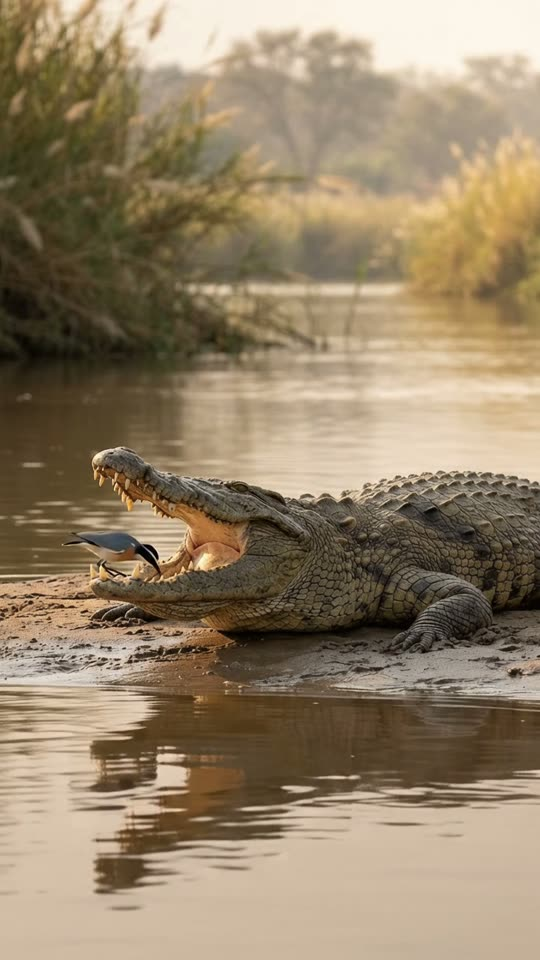
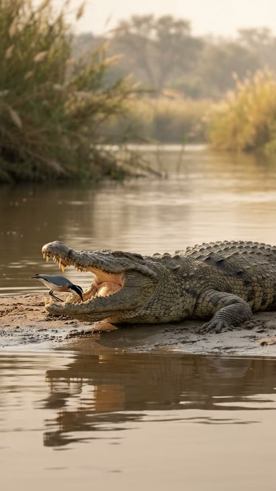
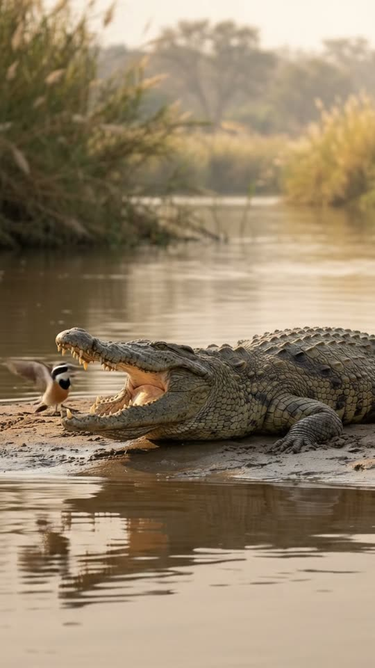
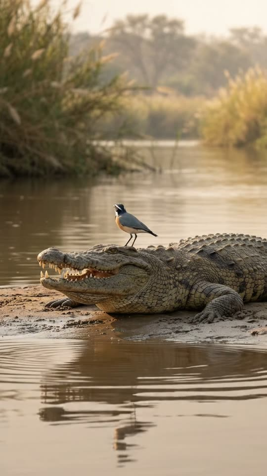

Free prompt pack
He opened wide.She went in.
A crocodile lies on a riverbank with its jaws wide open and a little bird inside, cleaning its teeth. The jaw starts coming down. She keeps working. She gets out through the last gap, the jaws snap shut on nothing, and she finishes her shift on his head. One still image and one prompt, in one take.
Both prompts, in the order I ran them. Pick the five bits out of his teeth before the jaw closes to reveal each prompt. Tap the river and someone surfaces.
The first frame
The bird is already inside. This image is frame one: a long-lens view across a river of a huge crocodile basking with its jaws wide open, and a small plover standing in its mouth, pecking between the teeth.
Watch out
Put the bird inside the mouth in the image. A bird that walks in during the take spends half of it walking; a bird already in there is the hook in the first second.

The prompt 121 words
Real wildlife photo taken with a long lens from the opposite riverbank at water level, warm late-afternoon light. A huge Nile crocodile lies on a muddy sandbank, seen from the side and slightly in front, its head toward the left, its jaws wide open in a basking gape: rows of uneven yellowed teeth, the pale pink-cream inside of its mouth. Standing on its tongue, right inside the open mouth, a small Egyptian plover pecks between the lower teeth: blue-grey back, black cap and mask, a black band across its white chest, a peachy belly. Rough olive-grey armoured scales, wet glistening mud, calm brown water in front reflecting them both, reeds softly blurred behind. Shallow depth of field, natural colour, sharp detail.
Peck, close, snap
Ten seconds, locked off from the far bank. Add the image as the reference, set 10 s, 9:16, 720p and audio on, and paste the prompt whole.
- 0–3.5 scleaning
- 3.5–6 sthe jaw comes down
- 6–7.5 sout, then snap
- 7.5–10 son his head
Watch out
Write the exit before the snap, in its own beat, and say the bird is never inside when the mouth closes. Leave it vague and the model closes the jaws on the bird.
Fragments



The prompt 1016 words
FORMAT Real wildlife video filmed with a long lens from the opposite riverbank, seen as the finished exported video file: the full picture edge to edge, nothing on top of it. Whatever records the picture is never in frame. One continuous take in real time, no cuts. Vertical frame. The video runs at 24 fps. No frame is repeated. Real time, 1x speed, never slow motion. SCENE On a muddy riverbank, a huge crocodile lies with its jaws wide open while a small plover stands inside its mouth, cleaning its teeth. The crocodile slowly starts to close its jaws; the bird keeps pecking as if nothing were happening, then hops out through the last gap with a scrap in its beak, a split second before the jaws snap shut on nothing. It lands on top of the crocodile's snout and eats the scrap there, while the crocodile rolls its eyes up to look at it. The bird is already inside the open mouth in the first frame. The take ends with the bird standing on the crocodile's snout. REFERENCE IMAGE Use it for the crocodile, the bird, the mud, the water, the reflections, the reeds and the light. Everything matches it exactly, zero drift, no smoothing. The movement is described below. THE CROCODILE One real Nile crocodile, about 4.5 m long: rough olive-grey armoured scales, a long heavy snout, rows of uneven yellowed teeth, the pale pink-cream inside of its mouth, green-gold eyes with vertical pupils. It lies flat on the mud with its head toward frame-left the whole take; its body and legs never move. Only its jaws and its eyes move: the upper jaw lowers slowly, then snaps shut; its eyes blink once with a slow sideways membrane and then roll up toward its own snout. THE BIRD One real Egyptian plover, about 20 cm long: blue-grey back, black cap and black mask through the eye, a black band across its white chest, a peachy-orange belly, short dark beak, grey legs. It moves like a real small wader: quick little steps, sharp pecks, short hops. One bird, the same bird all take. LOCATION MAP We are on the opposite bank, 20 m away, at water level, looking across calm brown water. The crocodile lies on a muddy sandbank in the middle of the frame, seen from the side and slightly in front, its head toward frame-left, its open mouth facing us at an angle so we see inside. Its reflection lies in the water below; blurred green reeds fill the background. FIRST FRAME The crocodile's open mouth at x 10-62%, y 40-60%, the upper jaw raised high; its body and tail running to frame-right at x 55-100%, y 50-62%; the bird standing on the tongue inside the mouth at x 30-40%, y 46-56%, pecking at the lower teeth; the reflection at y 64-82%; the reeds above at y 0-36%. Instant read: a little bird inside a crocodile's open mouth. No delayed reveal. CAMERA Locked off on the opposite bank: a still frame with only the faintest natural movement of a long lens. It never pans, never zooms, never cuts, never moves closer. ACTION TIMING 0–2.0 s — The crocodile lies perfectly still with its jaws wide open; the bird pecks between the lower teeth and pulls out a small silver scrap of fish, swallows it, and pecks again. 2.0–3.5 s — The bird hops across the tongue to the other side and pecks at the upper teeth; the crocodile blinks once, slowly. 3.5–6.0 s — The upper jaw starts to come down, very slowly, a few centimetres at a time; the teeth close in above the bird; the bird keeps pecking, unbothered. 6.0–7.0 s — With the jaws almost shut, a hand's width apart, the bird hops out through the gap at the front of the mouth with a silver scrap in its beak. 7.0–7.5 s — Right behind it the jaws snap shut with a loud clack, on nothing; a ripple runs across the water. 7.5–10 s — The bird lands on top of the crocodile's snout, between its nostrils, and swallows the scrap; the crocodile's eyes roll up toward it and stay there. Hold to the last frame. PHYSICS AND SCALE Real size: the crocodile is about 4.5 m long, its head about 70 cm, the bird about 20 cm, so the bird fits easily inside the open mouth. Real speed: the jaw lowers slowly over two and a half seconds, then the last part closes in a fifth of a second. The bird is never caught, never hurt, never inside the mouth when it closes. One crocodile, one bird. No blood. Nothing morphs. NO FULL-FRAME EVENTS Nothing fills the frame: the crocodile, the bird, the mud and the water stay in view in every frame. The splash of the snap is only a small ripple. LIGHTING Warm late-afternoon sun from frame-right, low and golden; soft highlights on the wet scales and the teeth; the bird's white chest bright but with detail; gentle reflections in the water. AUDIO No music, no score, no narration, no subtitles. Quiet river sounds: insects, distant birds, soft lapping water, the tiny tapping of the bird's beak on the teeth, the creak of the crocodile's jaw as it lowers, a loud wet clack at 7.0 s, a short flutter of wings. No words. LOOK Real wildlife documentary footage shot on a long lens, seen as the finished exported file: shallow depth of field, crisp scale and feather detail, natural colour, no film grain, no lens flare, no slow motion, never CGI, never a cartoon. No camera app interface: no shutter button, no gallery thumbnail, no record button, no icons, no timer, no recording dot, no frame lines. POSITIVE LOCKS One crocodile, one bird. The crocodile's body never moves; only its jaws and eyes. The bird is out of the mouth before it closes. No people, no boats. No captions, no subtitles, no on-screen text, no watermark, no logos, nothing on top of the picture. ONE CROCODILE. ONE BIRD. NO CUTS. NO ZOOM. NO SLOW MOTION. NO MUSIC.
Rule 01
Two animals that never meet
My biggest reels are all the same shape: two real species, a small kindness and a twist. A bird inside a crocodile is that, in one frame.
Rule 02
Slow, then fast
Two and a half seconds of jaw lowering, then the last bit in a fifth of a second. The slow part is the suspense; the fast part is the joke.
Rule 03
Freeze the big one
The crocodile's body never moves, only the jaw and the eyes. One big animal holding still is what makes the little one read.
That's the whole build
Now go findtwo animals that shouldn't.
If yours works, send it over. I read every DM and the good ones end up on the account.
@martiiifons